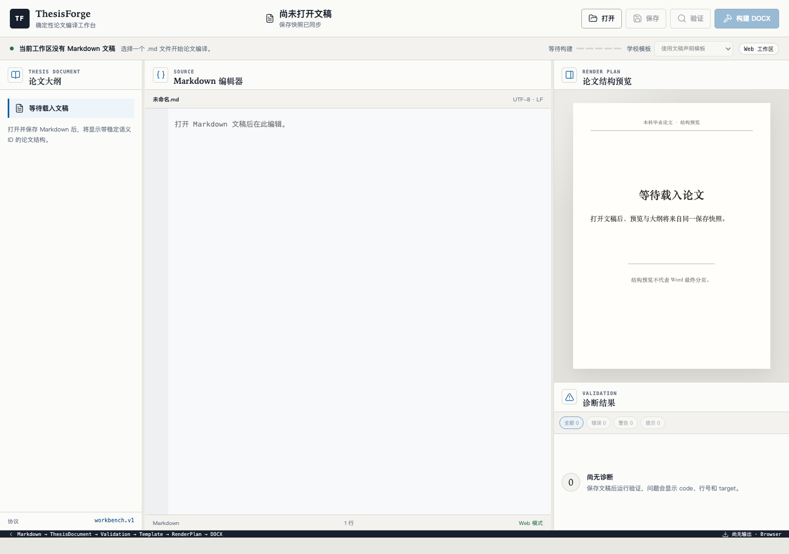
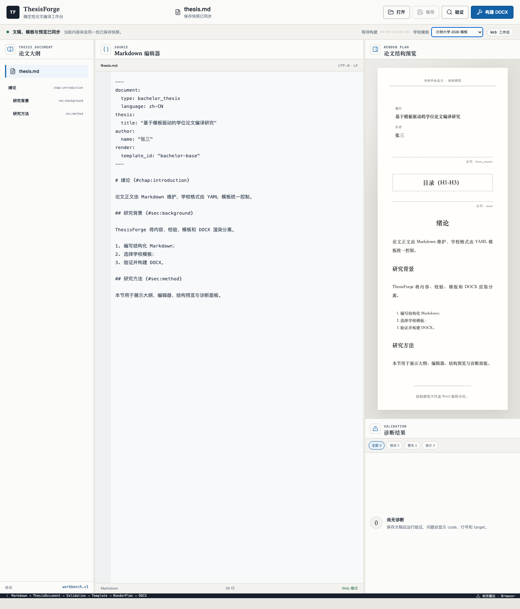
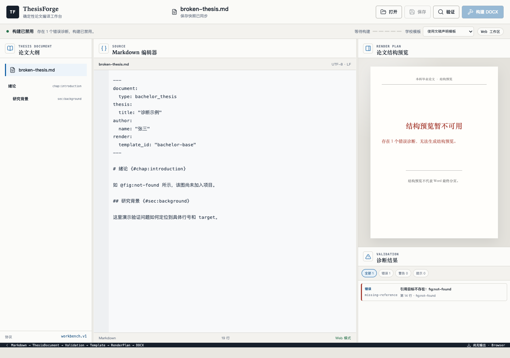
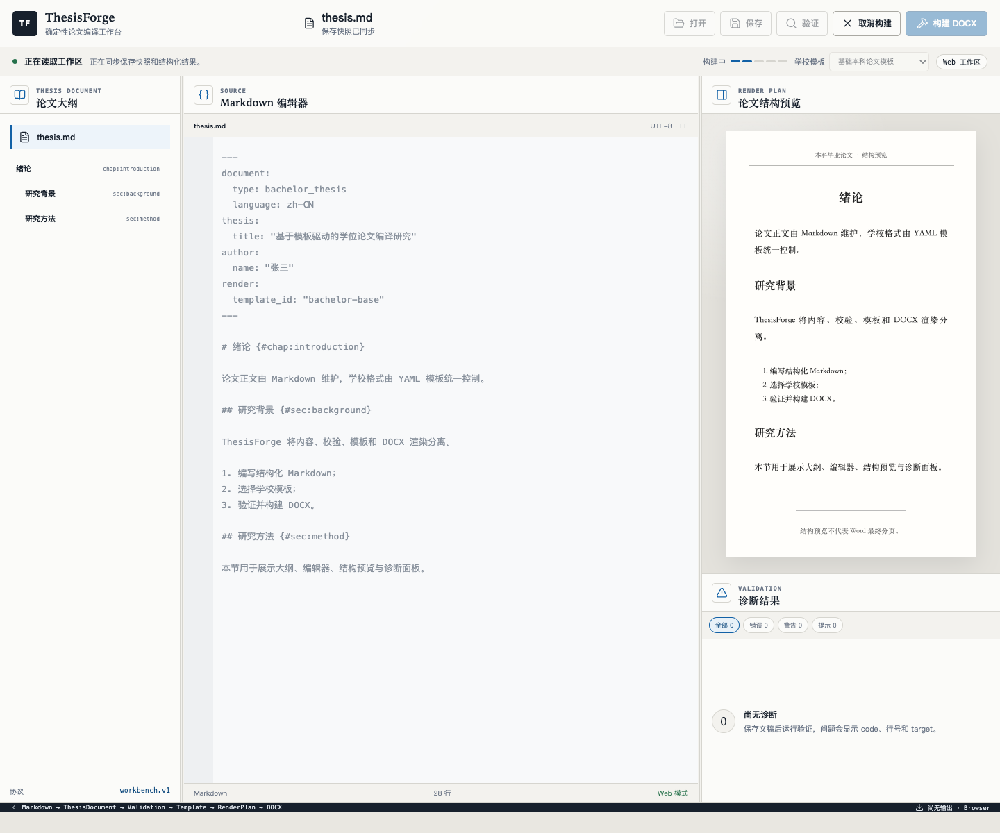
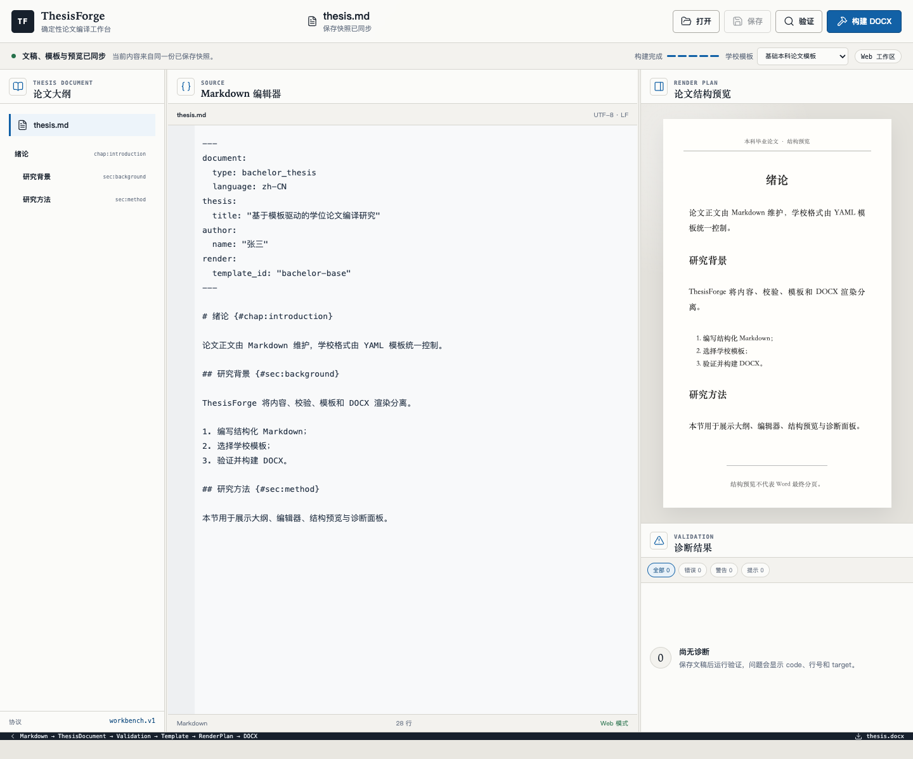
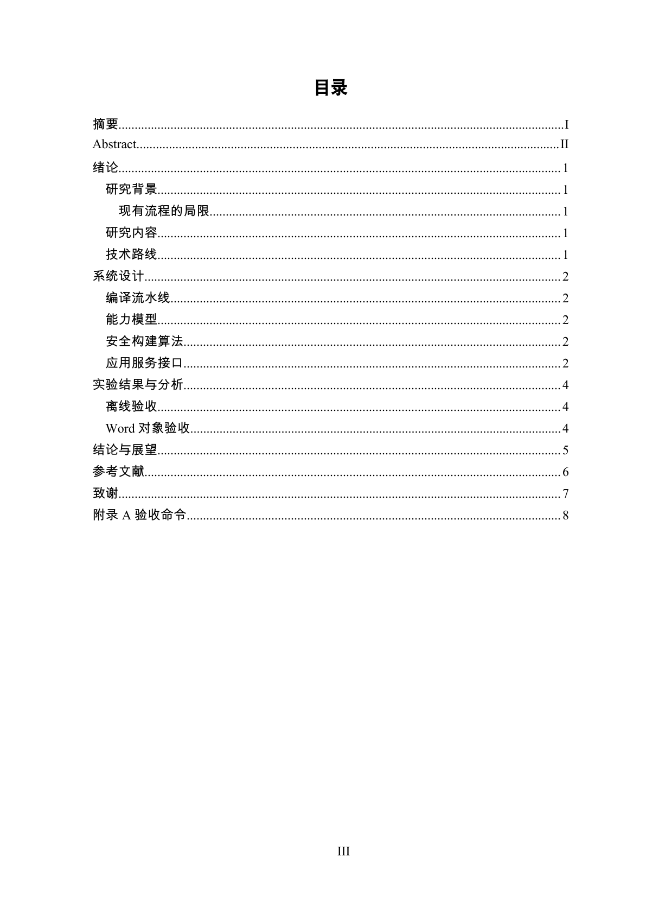

Web
适合浏览器试用和集中部署。上传 DocForge 项目后保存到服务端工作区，不覆盖电脑上的原始文件。
DocForge · Illustrated Manual
覆盖 Web、macOS、Windows 与 CLI 的完整操作路径，包含真实界面、模板参数、诊断修复、DOCX 构建和目录更新。
01 · Start
DocForge 把文档内容放在 Markdown，把项目元数据和学校格式放在 YAML。构建链固定为：
适合浏览器试用和集中部署。上传 DocForge 项目后保存到服务端工作区，不覆盖电脑上的原始文件。
适合本机长期写作。桌面端直接读写本地项目，默认按 manifest 的输出策略生成 DOCX。
适合自动化、批量构建和模板调试，以项目目录或 docforge.yaml 为输入，可用 -o 控制输出。
macOS 使用 DMG/App，Windows 使用 MSI/NSIS。正式发布版本应完成平台签名。
document.docx 输出名，但 HTTP adapter 尚无下载路由，界面也没有下载按钮。需要实际文件时使用桌面端、CLI，或由部署方导出工作区文件。

docforge.yaml 的项目。python3.12 -m venv .venv
.venv/bin/python -m pip install --upgrade pip
make install
.venv/bin/docforge inspect examples/complete-thesis
.venv/bin/docforge validate examples/complete-thesis
.venv/bin/docforge review examples/complete-thesis --output-dir /tmp/docforge-review
.venv/bin/docforge build examples/complete-thesis \
-o examples/complete-thesis/build/document.docx02 · Workbench
打开项目后，左侧是文档大纲，中间是 Markdown 编辑器，右上是结构预览，右下是诊断结果。顶部负责打开、保存、验证、模板选择和构建。
| 状态 | 含义与处理 |
|---|---|
| 文稿有未保存修改 | 先保存，验证、模板切换和构建才会恢复。 |
| 构建已禁用 | 存在错误诊断，先在右下角定位并修复。 |
| 目标位置不可写 | 桌面端检查文件和目录权限，再恢复工作区。 |
| 构建完成 | 桌面端按 manifest 的输出目录查找 DOCX；Web 端当前只返回输出标识。 |
Cmd/Ctrl+K 聚焦编辑器，Cmd/Ctrl+S 保存，Cmd/Ctrl+B 构建。
03 · Source
---
document:
type: master_thesis
language: zh-CN
thesis:
title: "论文题目"
author:
name: "张三"
render:
template_id: "hut-master-2026"
---
# 绪论 {#chap:introduction}
这里是正文。
## 研究背景 {#sec:background}
这里是研究背景。::: figure {#fig:architecture}
src: "./images/architecture.png"
caption: "系统总体架构"
width: "85%"
:::
系统总体架构如 @fig:architecture 所示。::: table {#tbl:results}
caption: "实验结果"
| 模型 | 准确率 |
| --- | ---: |
| A | 91.2% |
| B | 94.5% |
:::::: equation {#eq:loss}
$$
L=-\sum_i y_i \log \hat y_i
$$
:::
损失函数如 @eq:loss 所示。已有研究提出该方法 [@smith2025]。[^note]
# 参考文献 {#chap:bibliography}
::: bibliography
:::
[^note]: 这是脚注正文。.. 或符号链接越出允许目录。所有 chap:、sec:、fig:、tbl:、eq:、alg:、lst: ID 必须唯一。
04 · Template
工作台可显式选择基础本科和示例大学模板。HUT 或项目模板通过 docforge.yaml 声明，然后保持“使用文稿声明模板”。
render:
template_id: "hut-master-2026"missing-template 时，把当前 YAML 放入项目 templates/，或重新构建当前版本安装包。

my-thesis/
├── docforge.yaml
├── document.md
├── references.bib
├── images/
└── templates/
└── schools/
└── my-university/
└── 2026.yamltemplates/，并在 docforge.yaml 的 render.template_id 中选择。
05 · Formatting
长度支持 mm、cm、pt、em。颜色使用不带 # 的 6 位十六进制。未知字段会被拒绝。
page:
size: A4
orientation: portrait
margin:
top: 25mm
bottom: 25mm
left: 30mm
right: 25mm
header_distance: 15mm
footer_distance: 17.5mm
body:
font: {east_asia: 宋体, latin: Times New Roman}
size: 12pt
color: "000000"
alignment: justify
first_line_indent: 2em
space_before: 0pt
space_after: 0pt
line_spacing: {type: fixed, value: 20pt}heading:
level1:
font: {east_asia: 黑体, latin: Times New Roman}
size: 16pt
color: "000000"
bold: true
alignment: left
left_indent: 0pt
first_line_indent: 0pt
space_before: 0pt
space_after: 12pt
line_spacing: {type: fixed, value: 20pt}
keep_with_next: true
page_break_before: true
outline_level: 0list:
ordered:
levels:
- format: decimal
suffix: "、"
left_indent: 24pt
hanging_indent: 18pt
- format: upper_letter
prefix: "("
suffix: ")"
left_indent: 48pt
hanging_indent: 18pt
- format: upper_roman
prefix: "("
suffix: ")"
left_indent: 72pt
hanging_indent: 18ptlower_roman 生成 i/ii/iii，upper_roman 生成 I/II/III。
toc:
title:
size: 16pt
color: "000000"
bold: true
alignment: center
level1:
size: 12pt
left_indent: 0pt
first_line_indent: 0pt
page_number_tab: 155mm
leader: dots
level2:
size: 12pt
left_indent: 1em
page_number_tab: 155mm
leader: dots
level3:
size: 12pt
left_indent: 2em
page_number_tab: 155mm
leader: dotssections:
cover:
page_number:
format: none
front_matter:
start: new_page
page_number:
format: roman-upper
restart: 1
display:
alignment: center
page_prefix: ""
page_suffix: ""
include_total: false
main:
start: odd_page
page_number:
format: decimal
restart: 1
display:
alignment: center
page_prefix: ""
page_suffix: ""
include_total: falsesections:
main:
header:
default:
enabled: true
text: 湖南工业大学硕士学位论文
style: {size: 10.5pt, alignment: center}
even:
enabled: true
text: HUNAN UNIVERSITY OF TECHNOLOGY
first:
enabled: false
footer:
default:
enabled: true
page_number:
alignment: center
page_prefix: ""
page_suffix: ""
include_total: false
figure:
numbering: {mode: chapter, separator: "-"}
caption: {position: bottom, prefix: 图, size: 10.5pt, alignment: center}
table:
style: three_line
numbering: {mode: chapter, separator: "-"}
caption: {position: top, prefix: 表, size: 10.5pt, alignment: center}
equation:
numbering: {mode: chapter, separator: "-"}
alignment: center
bibliography:
title: {size: 16pt, bold: true, alignment: center}
entry:
size: 10.5pt
hanging_indent: 2em
line_spacing: {type: fixed, value: 20pt}
citation:
style: GB-T-7714-2025
presentation: superscript06 · Validation

missing-reference 表示正文引用了不存在的目标，构建会被禁用。| 问题 | 处理 |
|---|---|
missing-reference | 补充对象或修正引用 ID。 |
duplicate-id | 修改重复 ID。 |
missing-image | 检查图片路径和文件名。 |
resource-path-escape | 把资源放回论文允许目录。 |
missing-template-style | 在模板中补充对应语义样式。 |
窄屏使用“大纲 / 编辑 / 预览 / 诊断”标签切换面板。
07 · Build
文稿已保存且错误为 0 时，点击“构建 DOCX”。进度依次经过解析、验证、编译、渲染和完成。


/path/to/project/document.md
/path/to/project/build/document.docx.venv/bin/docforge validate my-thesis
.venv/bin/docforge build my-thesis -o my-thesis/build/document.docx08 · Office
DocForge 生成真实 TOC 和 PAGE 字段。构建服务会尝试用本机 LibreOffice 预填目录；不可用时仍保留可在 Office 中更新的字段。桌面端最终版式预览只由 Microsoft Word 生成 PDF，不切换到其他排版引擎；Web 自动预览使用 LibreOffice。

09 · Platforms
| 能力 | Web | macOS | Windows |
|---|---|---|---|
| Markdown 保存 | 服务端工作区副本 | 原始本地文件 | 原始本地文件 |
| DOCX 输出 | 服务端工作区 | Markdown 同目录 | Markdown 同目录 |
| 直接下载 | 当前未接通 | 不需要 | 不需要 |
| 编译核心 | Python HTTP adapter | Tauri + sidecar | Tauri + sidecar |
| 离线 | 取决于部署 | 支持 | 支持 |
10 · Troubleshooting
Web 保存的是服务端工作区副本。需要直接写回本地文件时使用桌面端或本地编辑器。
把模板放到项目 templates/，在 docforge.yaml 写 render.template_id，并选择“使用文稿声明模板”。
在 Microsoft Word 中更新整个目录；构建服务的字段预填仍可使用已配置的 LibreOffice 后台刷新器。
heading:
level1:
color: "000000"
alignment: left
left_indent: 0pt
first_line_indent: 0ptfirst_line_indent: 2em
space_before: 0pt
space_after: 0pt
line_spacing:
type: fixed
value: 20pt11 · Final Review
docforge.yaml 元数据完整。docs/MARKDOWN_SPEC.mddocs/TEMPLATE_SPEC.mdexamples/complete-thesis/document.mdtemplates/schools/hunan-university-of-technology/master-2026.yaml